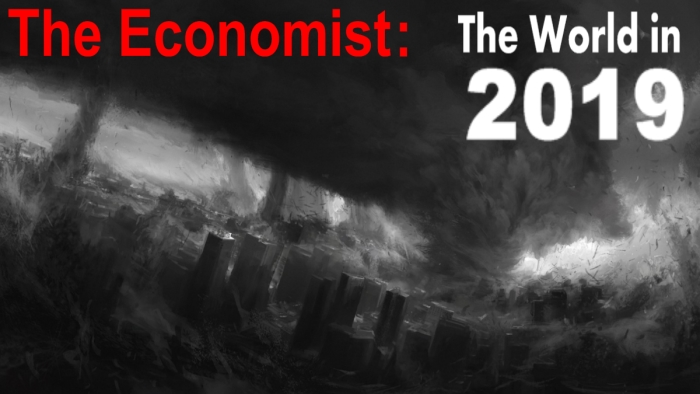
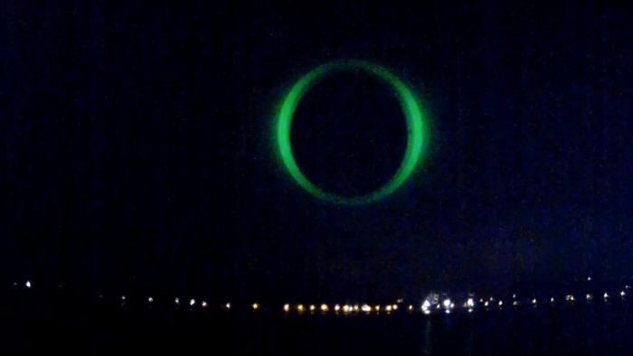

The Economist обещает в 2019-м «три дня тьмы»?

Англоязычный еженедельный журнал The Economist, принадлежащий британской медиакомпании The Economist Group...Подробнее

Над Францией открылась черная дыра! CERN? Портал инопланетян? Артефакт?...Подробнее